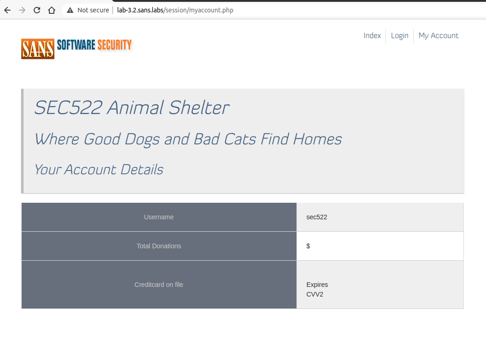
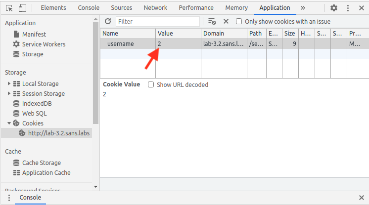

Exercise 3.2 - Session Fixation and Session Breaking
Objectives
Estimated Time: 12 minutes
Part 1:
In the first part, you will learn how to identify and fix session fixation vulnerabilities.
Part 2:
In second part, you will experience weak session IDs and learn how an attacker may exploit them.
Requirements
- [x] Lab VM
Part 1: Session Fixation
No Hints
Load http://lab-3.2.sans.labs/login1.php in Chrome. There are also login2.php and login3.php . The username is sec522 and password is training. The first two forms are susceptible to session fixation. Why? (In particular, the second one is not that obvious.) The third form is not susceptible. Can you determine why?
Step by Step
This exercise will ask you to run Firefox in addition to Chrome. To start Firefox when asked to, click on the Firefox icon at the left side of the screen.
IMPORTANT: Do not "Refresh Firefox" or update Firefox. Click "Cancel" if a dialog box appears offering to refresh Firefox.
-
Load http://lab-3.2.sans.labs/login1.php in the browser. You will be redirected to a URL that includes a session ID as a get parameter. The session ID is random. It should look like: sec522=gn5blighc8a)o5ks45k3pu81l
-
Copy the session ID and paste it into an empty file (you can use the Visual Studio Code on the left). We will call this session ID the "original session"
-
To simulate the attacker's view, open the Firefox browser by clicking on the Firefox icon on the left menu bar. Copy and paste the full URL from Chrome to Firefox. In the session fixation attack scenario, the attacker would set the session ID prior to the victim logging in. At this point, the attacker using Firefox and victim using Chrome both have the same session ID in the browser.
-
Go back to Chrome. Log in using the username "sec522" and the password "training". Did the session ID change from the "orginal session" you captured in step 2? The form is vulnerable to session fixation if it did not change.
-
To see how the attacker can exploit this - go back to Firefox and change the URL, replace the URL's "login1.php" to "guestbook.php" and leaving all other portion of the URL intact. If attacker (Firefox) is logged in and not being redirected to the login page. The application is vulnerable to session fixation.

Information
The implication of is step is for the attacker to test whether the user has logged in with the session. You will find that both attacker and victim are logged in using different browsers and both using the same logged in session.
-
Close Firefox and back in Chrome, click the "Logout" link in the Guestbook application.
-
Click on "Login Again" which will bring you to the next login form - "login2.php". This is a slightly different version of the login form.
-
With the login2.php, please repeat the same process from step 2 (see above) to step 6.
While the session ID is changed in Chrome in step 4, is attacker still able to access the logged in session in step 5?
If the attacker does not get redirected to the login page, that means that attacker is still able to use the session even though the session ID looks different on Chrome.
-
Click on "Login Again" which will bring you to the next login form - "login3.php".
-
With the login3.php, please repeat the same process from step 2 (see above) to step 6.
In step 5, is the attacker redirected to the login page?
If the attacker is redirected to the login page, that means that the session ID presented by the attacker is not associated with any user. Essentially, session fixation did not work.
-
Compare the two source code files below, it's best to open them in two browser tabs side by side so they can be compared.
http://lab-3.2.sans.labs/login2.phps
http://lab-3.2.sans.labs/login3.phpsPay attention to line 23 to 25. There are subtle differences in the location of session_regenerate_id.
What are the differences?
"fix2" regenerates the session ID after the login was verified. "fix3" regenerates the session ID first, so the user ID is never associated with the old session.
Part 2: Breaking Sessions
No Hints
Go to http://lab-3.2.sans.labs/session/login.php. Log in using the username "sec522" and the password "training". Try to switch to a different user's account after logging in.
Step by Step
-
In Google Chrome, proceed to http://lab-3.2.sans.labs/session/login.php and log in using the username sec522 and the password training.

Account Balance Screen
-
Press SHIFT-CTRL-I to open the developer tools.
-
Select the "Application" tab and select http://lab-3.2.sans.labs under Cookies.
-
Double-click on the cookie value (value is 1) and change it to 2 . Reload the page.

Chrome Developer Tools Cookies
You will now see a different account. Experiment with different values and try to find the account with the most donations.
Which account has the most donations?
tdeerness18@wordpress.com of value 45 has the most donation at $997.74
Conclusion
- Session are usually handled by your development framework but there are certain aspects of the session that need to be carefully managed by developers as illustrated in this exercise